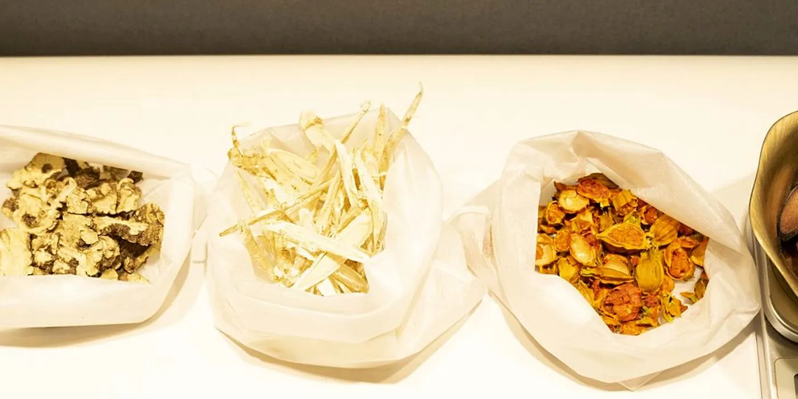

한 줄 답변
먹고 나서 자책과 후회가 반복될 때는 자신을 탓하기보다 언제 어떤 마음일 때 먹게 되는지를 살피고 끼니를 규칙적으로 챙기며 폭식과 구토가 반복되거나 우울감이 깊으면 정신건강의학과 진료를 권합니다.
먹고 나서 자책과 후회가 반복될 때는 자신을 탓하기보다 언제 어떤 마음일 때 먹게 되는지를 살피고 끼니를 규칙적으로 챙기며 폭식과 구토가 반복되거나 우울감이 깊으면 정신건강의학과 진료를 권합니다.
여쭙는 것
- 언제, 어떤 마음일 때 먹게 되나요? (스트레스, 외로움, 지루함, 피곤)
- 하루 식사는 규칙적인가요? 너무 굶다가 몰아 먹지는 않나요?
- 먹고 나서 어떤 생각과 행동이 따라오나요?
생활에서 해 볼 것
- 끼니를 거르지 않고 규칙적으로 먹기
- "무엇을 먹었나"보다 "먹고 싶었던 마음은 무엇이었나"를 한 줄로 적어 보기
- 먹고 싶을 때 5분만 산책이나 샤워, 통화로 마음 돌려 보기
한의원에서 함께 살필 것
- 식사 시간이 불규칙해 몰아 먹는 일이 반복되는 경우 식사 리듬과 식욕의 흐름을 함께…
- 스트레스를 받으면 속이 답답하고 먹는 양이 늘어나는 경우 긴장과 소화를 함께 살핍니다.
- 밤잠이 얕고 다음 날 식욕이 들쭉날쭉한 경우 잠과 식욕이 어떻게 이어지는지 함께 살…
먼저 확인이 필요한 신호
- 폭식과 구토, 설사약 사용이 반복되는 경우
- 먹는 것을 스스로 통제하기 어렵고 일상이 힘든 경우
- 체중이 급격히 줄거나 월경이 끊긴 경우
먹고 나서 "또 먹었네" 하고 자신을 몰아세우는 분이 많습니다. 자책은 체중을 줄여 주지 않고 마음만 무겁게 하며, 오히려 다음 폭식을 부르기도 합니다. 그래서 먹은 것보다 먹게 된 순간의 마음과 하루의 흐름을 먼저 살핍니다.
왜 이런 불편이 생길 수 있나요
- 끼니를 거르거나 너무 적게 먹으면 몸이 허기를 참지 못해 한 번에 몰아 먹게 될 수 있습니다.
- 스트레스, 외로움, 지루함, 피곤함을 먹는 것으로 달래는 습관이 생기기 쉽습니다.
- '먹으면 안 된다'는 엄격한 규칙이 깨질 때 자책이 커지고, 그 자책이 다시 먹게 만들기도 합니다.
- 잠이 부족하면 식욕이 커지고 감정 조절이 어려워질 수 있습니다.

먼저 말씀드리고 싶은 것
- 먹는 것으로 마음을 달래는 날도 있습니다. 그것은 약한 사람이라서가 아닙니다.
- 한 번 많이 먹었다고 그동안의 노력이 사라지지 않습니다.
먼저 이렇게 여쭙니다
- 언제, 어떤 마음일 때 먹게 되나요? (스트레스, 외로움, 지루함, 피곤)
- 하루 식사는 규칙적인가요? 너무 굶다가 몰아 먹지는 않나요?
- 먹고 나서 어떤 생각과 행동이 따라오나요?
- 잠은 충분한가요?

일상에서 먼저 해 볼 수 있는 것
- 끼니를 거르지 않고 규칙적으로 먹기
- "무엇을 먹었나"보다 "먹고 싶었던 마음은 무엇이었나"를 한 줄로 적어 보기
- 먹고 싶을 때 5분만 산책이나 샤워, 통화로 마음 돌려 보기
- 자책이 올 때 숨을 천천히 세 번 고르기
- 하루 한 번, 자신에게 괜찮다고 말해 주기
한의원에서 함께 살필 수 있는 경우
- 식사 시간이 불규칙해 몰아 먹는 일이 반복되는 경우 식사 리듬과 식욕의 흐름을 함께 살핍니다.
- 스트레스를 받으면 속이 답답하고 먹는 양이 늘어나는 경우 긴장과 소화를 함께 살핍니다.
- 밤잠이 얕고 다음 날 식욕이 들쭉날쭉한 경우 잠과 식욕이 어떻게 이어지는지 함께 살핍니다.
좋은꿈참사랑한의원에서는 자책보다 하루의 흐름을 먼저 차분히 듣습니다. 필요하다고 판단될 때 진맥·설진·복진으로 소화와 긴장 상태를 살핀 뒤 식사 리듬을 되찾는 계획과 침·한약 상담 등을 상태에 맞춰 정하고, 마음의 어려움이 크면 정신건강의학과 진료를 함께 안내합니다.

이렇게 기록해 오시면 상담이 쉬워집니다
- 많이 먹은 날의 시간과 상황, 그때의 기분
- 그날 끼니를 거른 적이 있는지
- 잠든 시각과 수면 시간
- 복용 중인 약
이런 증상은 먼저 확인이 필요합니다
- 폭식과 구토, 설사약 사용이 반복되는 경우
- 먹는 것을 스스로 통제하기 어렵고 일상이 힘든 경우
- 체중이 급격히 줄거나 월경이 끊긴 경우
- 우울감이 깊거나 극단적인 생각이 드는 경우
이런 경우에는 정신건강의학과 진료를 먼저 권합니다. 극단적인 생각이 들면 혼자 견디지 말고 정신건강 위기상담 전화 109나 119에 바로 연락하세요.
한눈에 보는 표
| 구분 | 핵심 |
|---|---|
| 여쭙는 것 | 언제, 어떤 마음일 때 먹게 되나요? (스트레스, 외로움, 지루함, 피곤) 하루 식사는 규칙적인가요? 너무 굶다가 몰아 먹지는 않나요? |
| 생활에서 해 볼 것 | 끼니를 거르지 않고 규칙적으로 먹기 "무엇을 먹었나"보다 "먹고 싶었던 마음은 무엇이었나"를 한 줄로 적어 보기 |
| 한의원에서 함께 살필 것 | 식사 시간이 불규칙해 몰아 먹는 일이 반복되는 경우 식사 리듬과 식욕의 흐름을 함께 살핍니다. 스트레스를 받으면 속이 답답하고 먹는 양이 늘어나는 경우 긴장과 소화를 함께 살핍니다. |
| 먼저 확인이 필요한 신호 | 폭식과 구토, 설사약 사용이 반복되는 경우 먹는 것을 스스로 통제하기 어렵고 일상이 힘든 경우 |
자주 묻는 질문
자책하는 마음도 한의원에서 상담하나요?
식사와 잠, 스트레스를 함께 묻고 생활 전체의 리듬 속에서 살핍니다. 폭식과 구토가 반복되면 정신건강의학과 진료를 권합니다.
다이어트를 하면 더 심해지나요?
너무 무리한 절식은 몰아 먹기를 부를 수 있어 권하지 않습니다.
많이 먹은 다음 날은 굶어야 하나요?
굶으면 다시 몰아 먹기 쉬워 다음 날도 평소처럼 끼니를 챙기는 것이 좋습니다.
이 글은 일반적인 건강 정보이며 개인의 진단이나 치료를 대신하지 않습니다. 증상이 있거나 복용 중인 약이 있다면 진료를 통해 확인하세요. 치료 효과는 개인마다 다를 수 있습니다.
지난 이야기부터 이어서 묻습니다
좋은꿈참사랑한의원은 재진 때 지난번 이야기부터 이어서 여쭙니다. 진료시간과 예약은 오시는 길에서 확인하세요.
좋은꿈참사랑한의원은 재진 때 지난번 이야기부터 이어서 여쭙니다. 진료시간과 예약은 오시는 길에서 확인하세요.